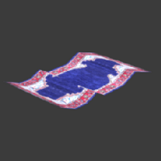
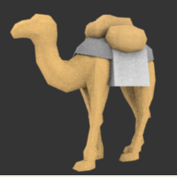
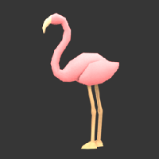
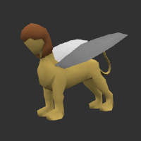

To the extent possible under law, the person who associated CC0 with this work has waived all copyright and related or neighboring rights to this work. This work is published from: Germany.
"As salam alaikum. I am Abu-Hassan carpet crafter from the faraway city of Jauhir.
On my countless journeys I fought the one-eyed cylops of Isle Balor
and took a deep glance into the mirrors of the oracle of Sumlah.
In thanks for the rescue of the vizier of the caliph of Jaunir I once
was the ruler of El-Minah and in the mountains held the tear of a godess
in my hands.
Rest your weary feet, dear traveler, to take a seat right by my side
and listen to my story.
... the story about a land so far away in time and distance,
that some may claim it never happened, but yet it is true.
Listen... listen faithfully..."
The Liquid Sands will be a turn based strategy game based on different units acting on a planer board, divided into hexagonal tiles.
Strategic elements of the game will follow two main concepts: fight
and trade.
We plan to provide the player with five different units, each with its
own strengths and weaknesses.
Currently we plan to support three
units mainly dedicated to fighting and two units with transportation
capabilities, making up for a total of five different units at the
players disposal.
To allow for some variation in gameplay as well as in strategy some tiles, like mountains will be impassable by player units.
|  |
"Jussuf" the flying carpetEvery child knows those standard flying rugware devices utilized by hurried merachants to serve their time-pressing business dealings. As he is anyting but one of such low-quality rugware devices, don't ever dare dare to confuse "Jussuf" with one of those. "Jussuf" is a beast that has a soul. Beware of the anger you will pull upon you if he ever finds out you try to compare him to such a lifeless thing as a carpet. His speed and his agility make up for the rather low capacity he is capable to transport. |
|  |
"Kalli" the camelAlthough his best times have already passed by, "Kalli" is still one of the most valuable companions you might wish to take along in the desert, unbeaten as well in loyalty as in experience. It might seem brave "Kalli" is just another camel, like those seen on daily markets. But take him with you just for a day and you will see he makes for one of the most priceless friends you can depend on at all costs. Due to the years "Kalli" has already seen pass by he might have lost some of speed but he will still carry almost any weight you might offer without a moan. |
|  |
Falmingo-lady "Rosa"As she originates from the far away lands of Jauq'al-Har, "Rosa" might be one of the most exotic birds ever to be seen in the deserts. Sheik Mussalah-Yissin ibn Salah-Masri al Kwasami brougt her from one of his numerous journeys, as she and her sisters were presented him as a gift. Don't be fooled by her lovely and fragile appearence. By the lightweight design of her body she is one of the fastest and makes one of the best scouts you might wish for and her pecker is mighty sharp. |
|  |
"Semira" the sphinx |
Note: This feature list represents the features we currently
plan to include in the final version.
Changes to this list are still possible.
Tile-Layout as well as Unit strengths and weaknesses fully customizable by configuration files.
camera fully movable in 3D-space
Automatic calculation of the shortest path between selected field.
Currently we are having a hard time tracking down some slight inaccuracies related to animated movement along a given path.
At the moment it seems that these only show up on computers with
framerates dropping extremely low.
Unfortunately we will have to investigate this issue further, before
any bugfix can be attempted.
To the extent possible under law,
the person who associated CC0
with this work has waived all copyright and related or neighboring
rights to this work.
This work is published from:
Germany.